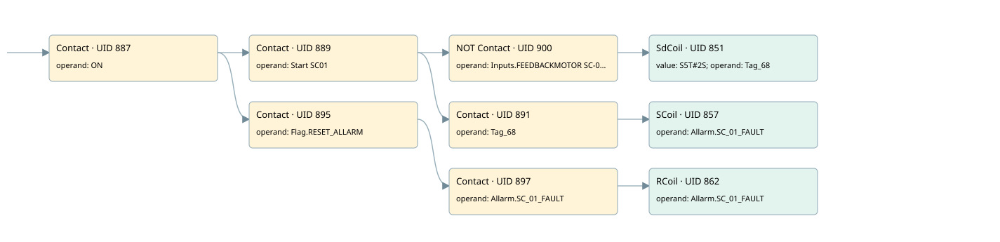

sc01
allarms 1 · 검색 색인 순서 23 · 원본 내부 NID 추정 25
백업 PLF 원본의 3054367 바이트 위치에서 복원한 XML. 검색 문서 1803의 객체 키 161022006962000000000000와 연결했다. 이름 해석 10/10개. 남은 RefId는 상수 또는 미해석 참조다.
연결 구조 다시 그리기
원본 Part/PCon/Wire를 이용한 연결도다. TIA 화면의 래더 배치 또는 실행 결과를 재현한 그림은 아니다. 핀 연결은 아래 표와 원본 XML을 기준으로 읽는다. 노드 위에 마우스를 두면 피연산자 이름을 볼 수 있다.

접점·코일·블록과 피연산자
| Part UID | Gate | Negated 핀 | 연결 피연산자 |
|---|---|---|---|
| 887 | Contact | operand = ON | |
| 889 | Contact | operand = Start SC01 | |
| 900 | Contact | operand | operand = Inputs.FEEDBACKMOTOR SC-01 |
| 851 | SdCoil | value = S5T#2S; operand = Tag_68 | |
| 891 | Contact | operand = Tag_68 | |
| 857 | SCoil | operand = Allarm.SC_01_FAULT | |
| 895 | Contact | operand = Flag.RESET_ALLARM | |
| 897 | Contact | operand = Allarm.SC_01_FAULT | |
| 862 | RCoil | operand = Allarm.SC_01_FAULT |
접점 경로를 펼친 조건식
Contact·O/A·비교기의 원본 연결을 읽기 쉽게 펼친 보조 해석이다. POWER는 전원 레일 시작을 뜻한다. 호출 블록·에지·타이머의 내부 동작과 다중 쓰기 순서는 이 표로 실행 검증하지 않았다. 미해석 핀과 RefId는 원문 연결표에서 확인한다.
| UID | 동작 | 대상 | 원본 접점 경로 | 내용 |
|---|---|---|---|---|
| 851 | SdCoil | Tag_68 | ((ON AND Start SC01) AND NOT [Inputs.FEEDBACKMOTOR SC-01]) | 시간 동작 SdCoil; 타이머 의미 추가 확인 / 시간 인자 S5T#2S |
| 857 | SCoil | Allarm.SC_01_FAULT | ((ON AND Start SC01) AND Tag_68) | 조건 성립 시 Set |
| 862 | RCoil | Allarm.SC_01_FAULT | ((ON AND Flag.RESET_ALLARM) AND Allarm.SC_01_FAULT) | 조건 성립 시 Reset |
원본 배선 연결
| Wire UID | 동일 Wire 연결 끝점 |
|---|---|
| 899 | Powerrail {} ↔ Part 887.in |
| 873 | ORef 863 (ON) ↔ Part 887.operand |
| 888 | Part 887.out ↔ Part 889.in ↔ Part 895.in |
| 874 | ORef 864 (Start SC01) ↔ Part 889.operand |
| 890 | Part 889.out ↔ Part 900.in ↔ Part 891.in |
| 903 | ORef 901 (Inputs.FEEDBACKMOTOR SC-01) ↔ Part 900.operand |
| 21 | Part 900.out ↔ Part 851.in |
| 875 | ORef 865 (S5T#2S) ↔ Part 851.value |
| 876 | ORef 866 (Tag_68) ↔ Part 851.operand |
| 877 | ORef 867 (Tag_68) ↔ Part 891.operand |
| 22 | Part 891.out ↔ Part 857.in |
| 880 | ORef 869 (Allarm.SC_01_FAULT) ↔ Part 857.operand |
| 882 | ORef 870 (Flag.RESET_ALLARM) ↔ Part 895.operand |
| 896 | Part 895.out ↔ Part 897.in |
| 883 | ORef 871 (Allarm.SC_01_FAULT) ↔ Part 897.operand |
| 898 | Part 897.out ↔ Part 862.in |
| 885 | ORef 872 (Allarm.SC_01_FAULT) ↔ Part 862.operand |
식별자 해석 근거 10개
| ORef UID | RefId | 이름 | IdentXmlPart 파일 | 해석 방법 |
|---|---|---|---|---|
| 863 | 1 | ON | 0658-IdentXmlPart.xml | UID/RID + search-text + NID agreement |
| 864 | 102 | Start SC01 | 0658-IdentXmlPart.xml | UID/RID + search-text + NID agreement |
| 901 | 292 | Inputs.FEEDBACKMOTOR SC-01 | 0657-IdentXmlPart.xml | UID/RID + search-text + NID agreement |
| 866 | 103 | Tag_68 | 0658-IdentXmlPart.xml | UID/RID + search-text + NID agreement |
| 865 | 28 | S5T#2S | 0656-IdentXmlPart.xml | literal candidate: UID/RID/NID + nearby named declarations + search-text agreement |
| 867 | 103 | Tag_68 | 0658-IdentXmlPart.xml | UID/RID + search-text + NID agreement |
| 869 | 105 | Allarm.SC_01_FAULT | 0657-IdentXmlPart.xml | UID/RID + search-text + NID agreement |
| 870 | 13 | Flag.RESET_ALLARM | 0657-IdentXmlPart.xml | UID/RID + search-text + NID agreement |
| 871 | 105 | Allarm.SC_01_FAULT | 0657-IdentXmlPart.xml | UID/RID + search-text + NID agreement |
| 872 | 105 | Allarm.SC_01_FAULT | 0657-IdentXmlPart.xml | UID/RID + search-text + NID agreement |
검색 코드 보조 자료
참조 명칭을 찾기 위한 자료이며 실행 순서나 AND/OR 관계는 위 연결표로 확인한다.
"on" "start sc01" "inputs"."feedbackmotor sc-01" "tag_68" s5t#2s "flag".reset_allarm "allarm".sc_01_fault "allarm".sc_01_fault "tag_68" "allarm".sc_01_fault